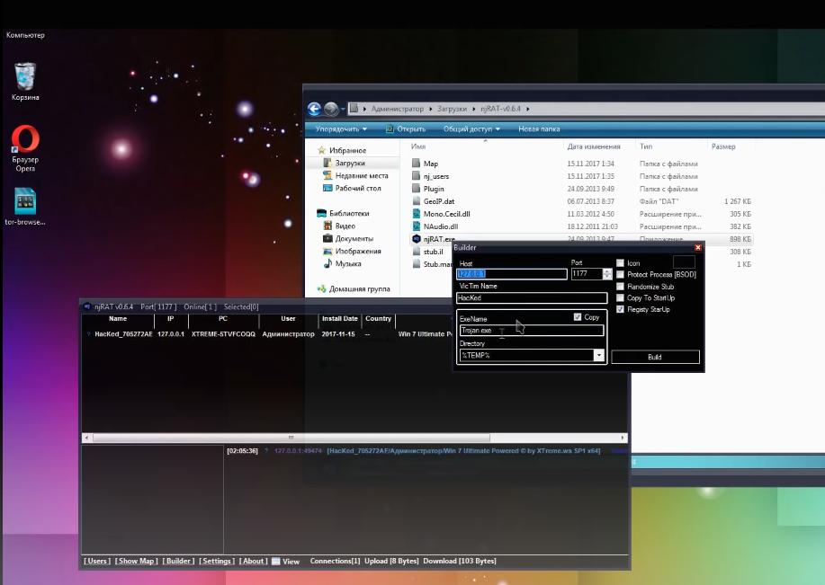
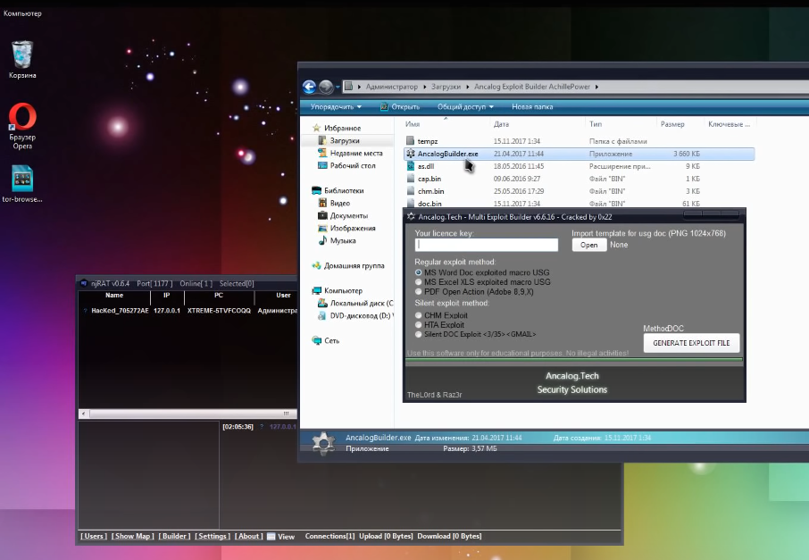
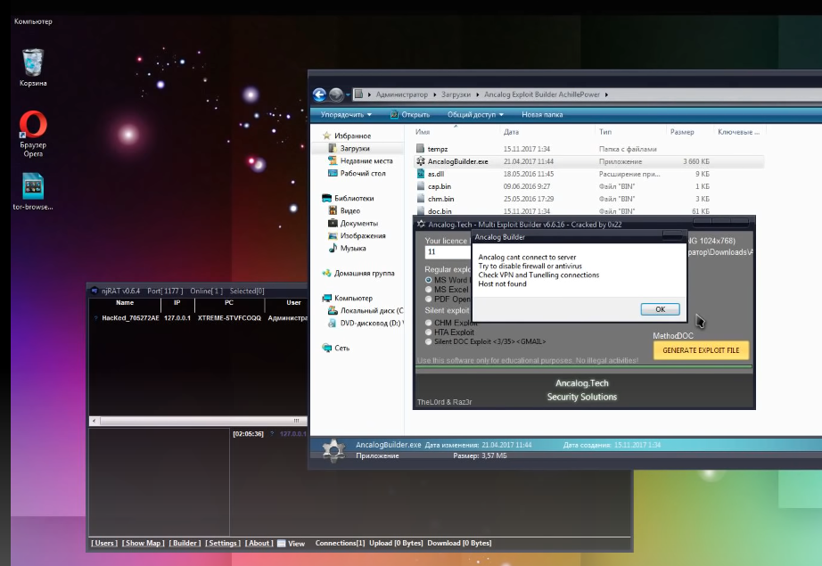

Компьютерный вирус звучит страшно, но так ли это страшно на самом деле? Давайте разбираться.
Компью́терный ви́рус — вид вредоносных программ, способных внедряться в код других программ, системные области памяти, загрузочные секторы и распространять свои копии по разнообразным каналам связи. Основная цель вируса — его распространение.
Вирусы распространяются, копируя своё тело и обеспечивая его последующее исполнение: вписывая себя в исполняемый код других программ, заменяя собой другие программы, прописываясь в автозапуск через реестр и другое.
После того как вирус успешно внедрился в коды программы, файла или документа, он будет находиться в состоянии сна, пока обстоятельства не заставят компьютер или устройство выполнить его код. Чтобы вирус заразил ваш компьютер, необходимо запустить заражённую программу, которая, в свою очередь, приведёт к выполнению кода вируса. Это означает, что вирус может оставаться бездействующим на компьютере без каких-либо симптомов поражения. Однако, как только вирус начинает действовать, он может заражать другие файлы и компьютеры, находящиеся в одной сети. В зависимости от целей программиста-вирусописателя, вирусы либо причиняют незначительный вред, либо имеют разрушительный эффект, например удаление данных или кража конфиденциальной информации.
Вирусы могут маскироваться в различных файлах, например:
Также они могут прятаться в системных файлах, что осложняет их поиски и обезвреживание.
Вирусом или его носителем могут быть не только программы, содержащие машинный код, но и любая информация, содержащая автоматически исполняемые команды, — например, пакетные файлы и документы Microsoft Word и Excel, содержащие макросы. Кроме того, для проникновения на компьютер вирус может использовать уязвимости в популярном программном обеспечении (например, Adobe Flash, Internet Explorer, Outlook), для чего распространители внедряют его в обычные данные (картинки, тексты и т. д.) вместе с эксплойтом, использующим уязвимость.
Допустим у нас есть определенный njRAT.exe (rat- remote administration tools), проще говоря программа удаленного доступа, с помощью этой программы создается вирус удаленного доступа( например в текстовом документе) и его нужно будет закриптовать- спрятать вирус.
Вредоносная программа, использующая функции удаленного доступа к пораженным ресурсам. Троянцы этого типа являются одними из самых опасных, так как предоставляют злоумышленнику широкие возможности для дистанционного управления скомпрометированной системой.
Когда будет вводится "Builder" нужно будет прописать ваш белый IP, VPN или DynDNS’ку в разделе хоста и изменив имя процесса, копируемого в систему на какой-нибудь из системных, ставим галочки напротив нужных нам пунктов.
Если закриптовать вирусную программу, то антивирус не всегда сможет вовремя среагировать. Вернее, он среагирует, но уже после непосредственного запуска зловреда. Для того, чтобы сгладить и этот момент при атаке, злоумышленники, как правило, используют дополнительные методы обфускации вредоносного кода.
Т.е., по сути, сначала программный код изменяется до неузнаваемости, а затем уже все данные шифруется сторонними средствами. Таким образом, вирус попадая к конечной жертве становится практически беленьким и пушистым. Но от этого, не менее опасным при запуске.
Предположим, что мы закриптовали нужный нам файл, дальше нам нужно перейти в программу Joiner, по сути она склеивает два файла между собой, там имеются варианты, того как мы будет маскировать файлы.
Например:
Дальше нужно выбрать файл- картинку, которая будет использована и выбираем наш вирус, генерируем файл и ждем пока прогрмма все сделает
 Поздравляю, у нас получился файл MS Word Doc / MS Exel XLS / PDF, открыв который у нас запускается вирус удаленки . Далее нам нужно выгрузить файл на torrent, mediaget или еще куда-либо, под видом реферата или презентации. И возможно какой-нибудь недалекий человек, решивший, что реферат можно просто скачать, в лучшем случае откроет файл и заразит свой пк вирусом, в худшем - принесет его на флешке преподавателю.